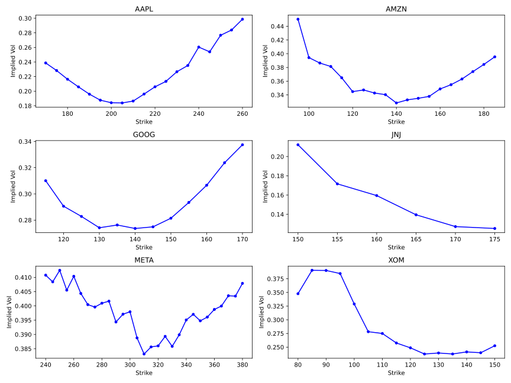
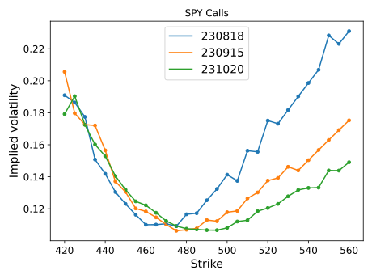

Option smiles with Polygon API
Github repository for this project: https://github.com/emre-ozer/mathematical-finance/blob/main/polygon-options/option.py
Roadmap
This is an example use case of the option class implemented here. The aim is to observe market smiles in implied volatilities, that is observing a convex relationship between the strike and implied volatility, with a local minimum.
Given a set of option contracts (with the same expiry and underlying), be it call or put, and a set of strike prices, we would like to compute and plot the implied volatility as a function of strike.
- We already have the tools from the option.py implementation at our disposal, which includes computing the implied volatility.
- Write the output to a csv file.
- Implement a query counter so that we don't make more than 5 API calls per minute.
- Finally, write a plotting script.
Implementation
It turns out that initialising an option object in our previous implementation makes 1 call per API client (stock, option, reference), provided we don't query the exercise style at initialisation. This makes counting queries trivial, as for each contract we increase the count by one.
Side note: I am not distinguishing between American and European options, even though their no-arbitrage prices differ for dividend-paying stocks. The error will be small for stocks with dividend rate much smaller than the interest rate.
Here is a function that takes the underlying ticker, an array of strikes, the expiry (as a datetime.date object) and the type ('C' or 'P') as an input; and records the implied volatility as a function of strike on a csv file.
def smile(underlying, strikes, expiry, type):
query_count = 0
f = open("SM_{0}{1}{2}.csv".format(underlying, type, expiry.strftime("%y%m%d")), "w")
f.write('K,IV')
for K in strikes:
print(K)
if query_count == 5:
print('Query limit reached, waiting for 60 seconds.')
time.sleep(60)
query_count = 0
opt = option.Option(underlying, K, type, expiry)
output = str(K) + ',' + str(opt.implied_vol)
f.write('\n' + output)
query_count += 1
f.close()I find it easiest to go to Yahoo Finance, and look up the option chains manually for a given underlying (e.g. here is the link for SPY). The important point here is to make sure the range of strikes we specify have sufficient volume, otherwise the prices would be unknown and our analysis would be irrelevant.
Results
Below is a plot of implied volatilites (at the time of writing) for various call options on the following underlyings: AAPL, AMZN, GOOG, JNJ, META, XOM; all with expiry on 18th of August 2023. Options with the most trading volume display the cleanest smiles, such as AAPL, AMZN and GOOG.
It is straightforward to extend this analysis to other option types, expiries and underlyings. It is illustrative to observe the time dependency (or rather the expiry dependency) is smiles. Consider calls struck on SPY, for which the volumes are sufficiently large. Below plotted are smiles for options contracts expiring on August 18, September 15 and October 20 (the time of writing is July 10). Roughly, each contract expires a month apart.
A clear trend can be seen here: the smiles tighten as the expiry approaches. Equivalently, one observes that the second derivative of implied volatility with respect to strike is monotonically decreasing as a function of time to expiry.